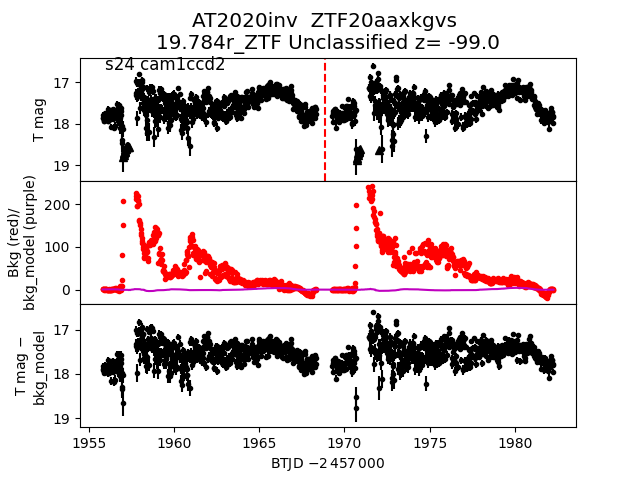
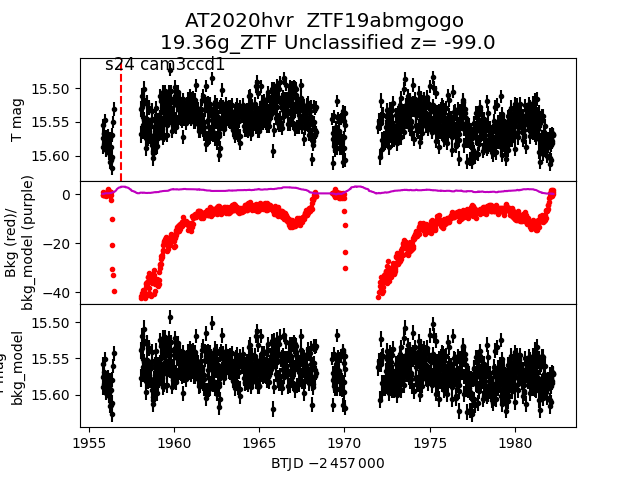
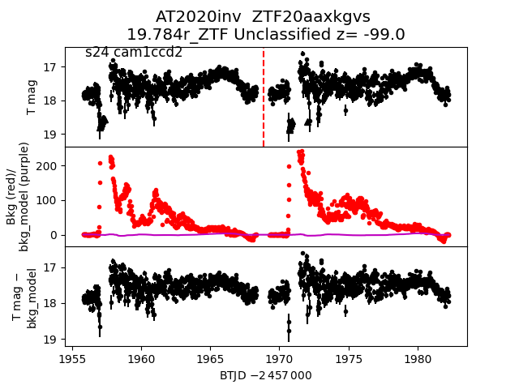
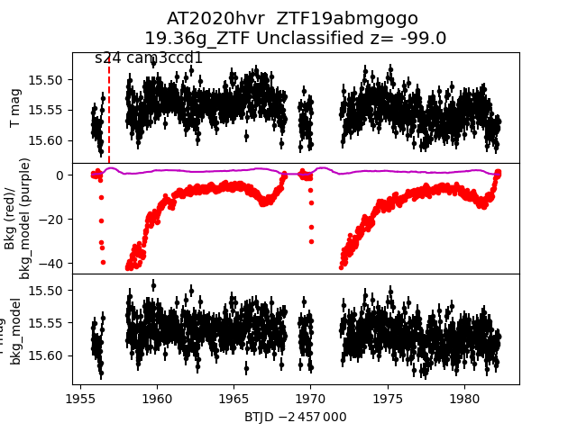

all transients in sector24 (61 total)
Each figure has three panels. The top panel shows the transient light curve, the middle panel shows the local background (estimated in an annulus), and the bottom panel shows a "background-model corrected" light curve. Details about the background model are in the README.
The vertical red line marks the time of discovery reported to TNS. Other useful metadata from TNS is in the figure title.
Note that the top and bottom panel are in magnitudes, while the middle panel is in differential flux units. The magnitudes are calibrated to the flux in the reference image used for image subtraction. Thus, flux from the host galaxy is included in these magnitudes.
3-sigma upper limits are plotted as triangles with no errorbars. A typical limiting magnitude is 19.6 in 30 minutes or 18.4 in 200 seconds (for low backgrounds).
The links allow you to download the light curve data as a text file.
More details in the README.
2020jsn
2020jhz
2020jjk
2020jhe
2020hll
2020jtg
2020jcc
2020hvx
2020jvl
2020hyu
2020juq
 2020ifr
2020joi
2020jgd
2020ifr
2020joi
2020jgd
 2020jej
2020hvq
2020inv

2020jio
2020jdl
2020hvr

2020hmp
2020jmd
2020jkh
2020jlr
2020ibi
2020jej
2020hvq
2020inv

2020jio
2020jdl
2020hvr

2020hmp
2020jmd
2020jkh
2020jlr
2020ibi
 2020ilw
2020jkm
2020hye
2020jua
2020jjh
2020ilw
2020jkm
2020hye
2020jua
2020jjh
 2020jvc
2020ish
2020jsm
2020juf
2020imc
2020jvr
2020jvc
2020ish
2020jsm
2020juf
2020imc
2020jvr
 2020jjf
2020jjf
 2020jkj
2020jow
2020ioh
2020ifv
2020jcb
2020hlm
2020hzz
2020hlr
2020isi
2020iac
2020hln
2020jkj
2020jow
2020ioh
2020ifv
2020jcb
2020hlm
2020hzz
2020hlr
2020isi
2020iac
2020hln
 2020jog
2020jss
2020hmk
2020jem
2020hsn
2020iwg
2020hyh
2020jvg
2020hzc
2020jsv
2020iit
2020int
2020iwn
2020jog
2020jss
2020hmk
2020jem
2020hsn
2020iwg
2020hyh
2020jvg
2020hzc
2020jsv
2020iit
2020int
2020iwn